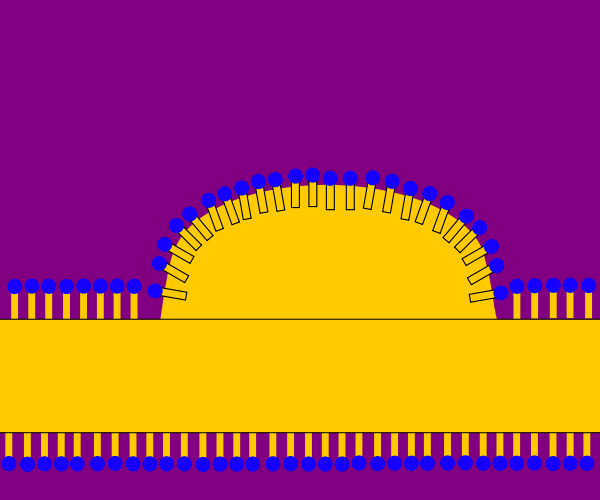
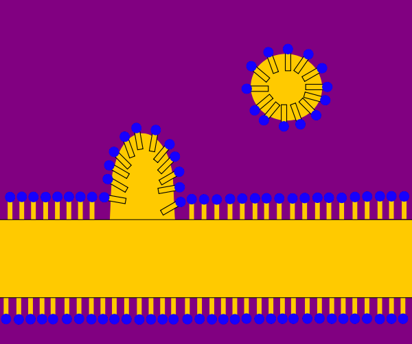

Damit das anionische Tensid anionisch bleibt und nicht protoniert wird,
wird meist eine leicht alkalische Wasch"lauge" gewählt.
Die Tensidmoleküle lagern sich mit ihrer lipophilen Schwanzgruppe
an der Faser an und verbessern so die Benetzbarkeit.
(Vgl. Grenzflächenaktivität > Verbesserung der Benetzbarkeit)

Es bilden sich stabile Fettschmutz-Micellen, die sich aufgrund der
elektrostatischen Abstoßung zwischen den anionischen Kopfgruppen
nicht wieder der Faser annähern.
(Vgl. Phasengemische > Bildung von Micellen und 3.3 Öl-in-Wasser-Emulsion)